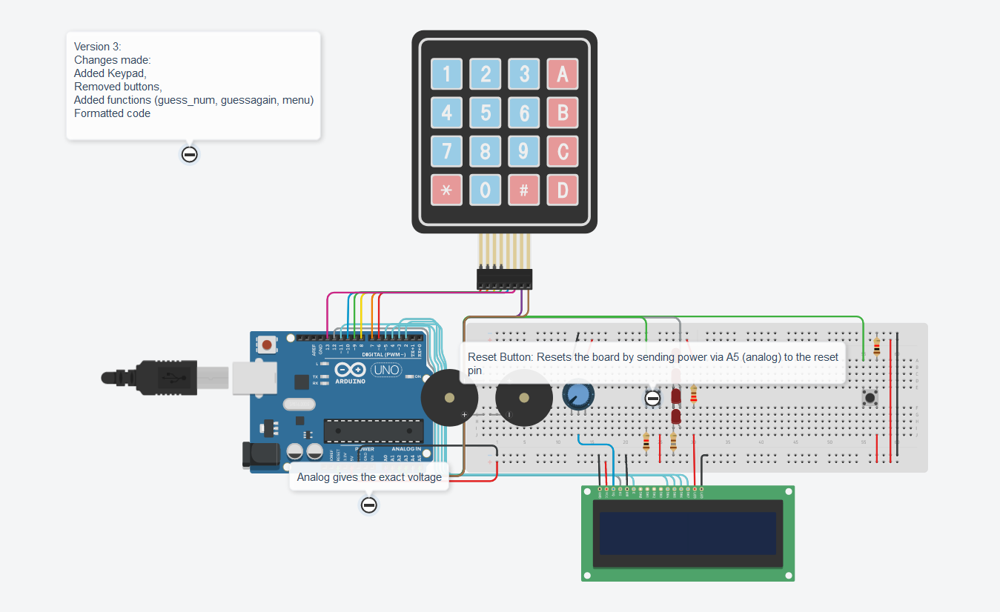

School Projects
Below are some of the assignments I undertook in Mr. Pagliari's Comp. Tech. class
Smiley Face:This was the classes first soldering project, in which we were expected to, using 7 resistors, a switch, battery, and a custom board, make a "smiley face". Some students didn't pick up soldering too well, but were assisted by their mates, and the people that I worked with (it was an individual activity, but some people worked in groups) were quite helpful, such that we completed our set first.
Knight Rider:This projects was supposed to be a 4 led's lined up that blinked in order(while button 1 was being pushed), in order to create a wave effect, but I decided to add 4 more led's and another fuction, which switches on a pseudo-random led while the second button is being pushed. Button 3 does nothing. This was fairly easy to complete, and helped everyone understand the delay function, which would help them with the traffic light assignment.
Traffic Lights:The traffic lights assignment also had to be soldered. It's very simple, a set of led's set to resemble traffic lights.
The challenging part of this assignment was getting the timing right. I did not until this point realize that it was not 1 min for green and red and 10 for yellow universally.
I eventually got it write after a couple attempts, and had it submitted.
Some of my class mates had issues coding it, and I gladly assisted.

Penultimate Greatness:This is a simple project I was working on a little while back that utilizes both an lcd and a keypad. It features multiple modes with different functions, such as "guessing game", "calculator", "keyboard", etc. I used the Keypad and Liquid Crystal libriaries when programming it, and it gave me a little trouble, but i said, "Nah, I'd Win". I called it "Penultimate Greatness" because it was supposed to be my second to last arduino Project in Mr. Pagliari's class, but this website project really said "you sure 'bout that bro"
Arduino Resources